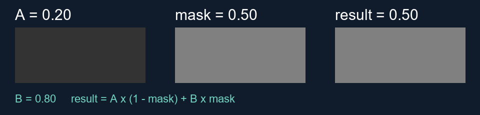

Shader cheat sheet
Finish your existing shader. Open only the reference you need; the experiments below are optional.
Week 9 · Unreal 5.7 · Find the control, predict the change, compare, reset. Reference IDs match the slides; wall numbers show the gallery route.
Choose the effect
Height blend: changes the boundary between surfaces.
POM: shifts texture sampling for apparent depth.
WPO: moves existing vertices; check mesh density and shading.
Flow: RG gives direction; a scalar mask limits influence.
Useful operations
Lerp(A, B, mask)
0 selects A; 1 selects B.
Equal A and B give a constant.
Saturate clamps a value to 0–1.
UV × tiling + offset
More tiling → smaller repeated features.
Height blend reshapes a transition; it does not move vertices.
Who changes?
Material instance: every object using it. Duplicate and assign for a separate variant.
Collection (MPC): all materials reading that collection.
Primitive data (CPD): the selected component.
Static switch: selects a compiled branch, not a runtime animation.
No visible change?
- Is this material assigned?
- Is the parameter override checked?
- Is its branch active?
- Correct channel and scope?
- Same camera/light, with a readable reflection?
Record the original values first. Restore them after the comparison.
Open only what you need
Exact controls · height, scope, decals + optional master diagnostic
Full lab steps · Change one surface property and keep other conditions fixed.
| Route | Try | Restore |
|---|---|---|
| A · Roughness | Assigned duplicate of MI_W09_05_PolishedMetal. Packed off. Both endpoints: .2/.2 → .8/.8. | Original .12/.12 or original assignment. |
| B · Height blend | Assigned duplicate of MI_08_HeightBlend. Blend Contrast: 1 → 4. Keep paint fixed. | Original contrast 2 and assignment. |
| C · Scope | MPC_11_SharedControls.SharedRoughness: .2 → .8. Reset; then try one component’s CPD RGB 0–2. | Recorded collection value (staged .28) and component RGB. |
| D · Decal | Assigned duplicate of MI_10_RoughnessDecal. Roughness: .03 → .8. | Recorded value and original decal assignment. |
Packed textures and inactive controls
This master’s ORM: R = ambient occlusion; G = roughness; B = metallic. Station 07’s MRAH: R = metallic; G = roughness; B = AO; A = height. Check the convention before connecting channels.
UsePackedORM selects ORM_MinRoughness / ORM_MaxRoughness and ORM_AOStrength. The separate-map controls are inactive. Masks use linear data; check import settings and sampler type together.
Master-material troubleshooting (only if needed)
UseAdvancedUVoff: useUVTile. On:UVScaleOffsetRG = U/V tiling; BA = U/V offset.NormalStrength: 0 = flat tangent-space normal; 1 = supplied detail. Use the included DirectX normal.AOStrength0 gives AO = 1 (neutral white). AO × 0 would give the wrong disable state.- Leave Specular at its usual 0.5 starting point for this roughness test.
- Normal mapping changes shading; POM changes texture sampling for apparent depth; WPO moves existing vertices.
Paint, directional coverage, decals and layers
- Paint: station 08 regular blend uses R = stone / G = sand; height blend uses R as transition. Vertex density limits painted detail. Check the parent before editing.
- Direction: compare normal and direction in the same space. Moss normalizes a nonzero direction; snow expects a unit direction. Keep contrast positive.
- Decal: check material assignment, projector direction/bounds, Receives Decals and the receiver material’s Decal Response.
- Custom decal response: manual DBuffer logic belongs in the receiver material. Set its Decal Response to None to avoid double application; this differs from the actor reception switch.
- Layers: station 12’s Transition belongs to the blend at index 0; a matching name elsewhere is not the same control.
Lerp example and runtime controls
Lerp = A × (1 − t) + B × t. With A = .2, B = .8 and t = .25, the result is .35. Lerp can extrapolate outside t = 0–1 unless clamped.

For runtime instance changes, create a Dynamic Material Instance (MID), assign it, then update that same MID. Static switches select compiled variants. Functions and tidy graphs aid reuse; they do not prove a speed gain.
Optional debugging record
Use short phrases. Download to keep your work; this page does not autosave.
Optional: parallax depth (station 07)
POM: height shifts the texture lookup as the view changes. It does not add geometry or collision. Normal maps change shading direction; height blending changes a blend weight.
Check: height channel A in this brick MRAH texture; matching parallax UVs for surface samples; sensible height and step count. More steps can improve quality but cost more work.
Try: duplicate and assign the POM instance. Close to the surface, compare Near Height 0 → .04 with everything else fixed. Restore your recorded defaults. Full experiment.
Optional: water motion checks
- Mask: one value controls influence. A flowmap uses two channels for direction.
- UV motion: moves sampled detail; WPO moves existing vertices.
- Wave shading: displacement and normals must agree in space, time and amplitude. Check the silhouette and a grazing highlight.
Finish your current effect first. These checks do not require a new water shader.